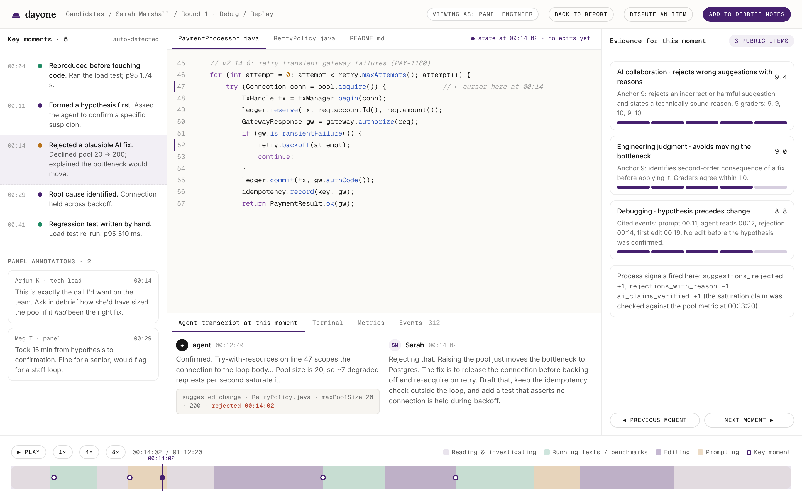

Every number in a Dayone report points to evidence in the session replay. Here is how a two-hour session becomes eight dimension scores, a recommendation, and the questions worth asking in the debrief.
Edits as diffs, commands and output, test runs, metrics queries, prompts, agent tool calls, apply and reject clicks. No video.
"Reproduced before first edit" is a timestamp comparison. Attribution tags every final line as human, AI, or AI then edited.
Per rubric item, each sees the anchors, the hidden truth and the trace, and must cite the events behind its score. Two model families.
Median score per item; the spread becomes grader agreement. Items with wide disagreement go to a human.
A random sample, every flagged item, every dispute. Reviewed blind to the automated score. Overrides are shown.
Rationale, key moments and debrief questions are composed from cited events and verified against them. The writer cannot change a number.
Reproduce-first behaviour, hypothesis quality, use of telemetry, decoys rejected, cause found.
Ignored: speed alone, files openedConvention adherence, diff coherence, error handling, size proportional to task.
Ignored: formatting, personal styleTrade-offs written down, proposals grounded in measurement, smallest sufficient change, what breaks next.
Ignored: buzzwords, diagramsRegression test that fails before and passes after, mutation score, edge cases named.
Ignored: line coverageMeasured before and after, correct bottleneck, benchmark used.
Ignored: unmeasured micro-optimisationAuthorisation, input handling, secrets, atomicity, prioritisation by exploitability.
Ignored: scanner output pasted uncriticallySpecific prompts, claims verified, wrong suggestions rejected with reasons, boilerplate delegated, bad changes reverted.
Ignored: number of prompts, either wayTriage order, mitigate before fix, saying "I don't know yet", pushing back on a bad requirement.
Ignored: confidence of tone10% of sessions in the first months, falling to 3% once agreement is stable. Senior engineers grade blind, with the same rubric and replay. Their scores are kept forever beside the automated ones.
Low grader agreement, a score near a band boundary, an outcome that disagrees with the process, or an integrity flag. Integrity flags route to review; they never change a score by themselves.
Companies and candidates can dispute any item. A reviewer with no prior contact with the session grades it blind. Response within three business days, outcome visible to both sides.

Nobody in this category has published evidence that their AI-era assessment predicts on-the-job performance. We are collecting it from the first design partner onward, and we say in every report footer what we can and cannot yet claim.
Every rubric reviewed by at least three senior engineers outside Dayone. Job analysis rationale documented per scenario.
Dimension scores compared with partners' own panel scores, and with manager ratings of current employees who volunteer to run scenarios.
Structured six-item manager ratings at 3 and 6 months for hires. Published once n ≥ 150 hires across ≥ 5 companies. We expect r ≈ 0.3 to 0.5, in line with structured work samples, and will not promise more.
Score distributions by voluntarily self-reported group, stored separately, four-fifths rule as the first screen, scenarios revised when it triggers. Reported to customers on request.